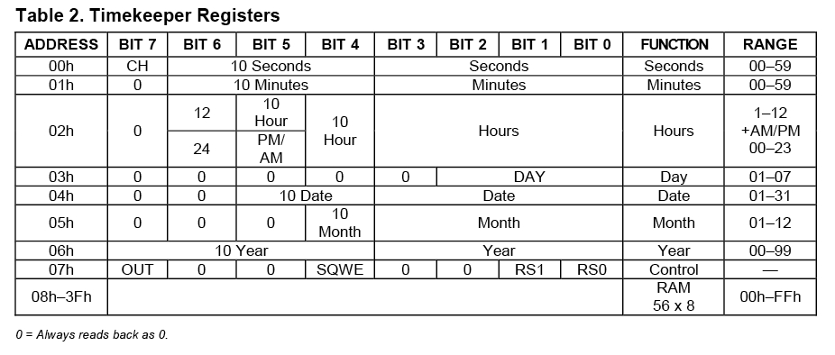

We all know that most MCUs we use for our projects are time-agnostic; simply put
they are unaware of the time around them. It’s OK for most of our projects but once
in a while when you come across an idea where keeping time is a prime concern,
RTC module is a savior. It’s perfect for projects containing data-logging,
clock-building, time stamping, timers, alarms and any real time based automation's as well.
There are different kinds of RTC module available in the market. We are
using the most common RTC module that comes with the DS1307 from MAXIM.
This application note provides information on how to interface a DS1307 real-time
clock (RTC) to a 8051 microcontroller.
Hardware Discussion : RTC Chip DS1307
Fig: RTC Chip DS1307
DS1307 Features :
Real-time clock (RTC) counts seconds, minutes, hours, date of the month,
month, day of the week, and year with leap-year compensation valid up to 2100
56-byte, battery-backed, nonvolatile (NV) RAM for data storage
Two-wire serial interface.
Programmable square wave output signal.
Automatic power-fail detect and switch circuitry.
Consumes less than 500nA in battery backup mode with oscillator running.
Available in 8-pin DIP or SOIC.
Optional industrial temperature range: -40°C to +85°C
Pin Description :
Fig: DS1307 circuit
Pin 1, 2 X1, X2 : These are the pins used to connect an external
crystal oscillator to provide the clock source for the chip. According to the
datasheet quartz crystal of 32.768 kHz should be used along with this chip.
Pin 3 V BAT : This pin is used to connect a +3V lithium battery
to provide supply when the external supply voltage is not available. This pin
should be grounded when not in use.
Pin 5 SDA: Serial data input/output for the I2C serial interface.
Pin 5 SCL: Serial clock input. It is the I2C interface clock input
and is used in data synchronization.
Pin 7 SQW/OUT: This output pin provides pulse ranging from
frequency 1 kHz, 4kHz, 8 kHz or 32 kHz and needs a pull up resistor to operate.
Pin 8 Vcc: + 5V Supply.
DS1307 Memory Mapping :

Fig: RTC Memory Mapping
The DS1307 has a total of 64 bytes of RAM with address ranging from 00H to 3FH
where the first seven bytes are used for time values while the next byte is the
control register which controls the SQW/OUT pin in the chip. The rest of the bytes
from 08H to 3FH is available for general purpose data storage.
How Works ?
Register Pointer : This DS1307 chip holds a register pointer that
marks the byte that will be accessed next for the operation. After each read/write
operation the register pointer is automatically incremented which is highly useful
in multibyte read write.
Time Format in RTC DS1307
The data such as time, minute, year etc are given stored in the BCD format.
As you can see in the address mapping that each byte was allotted to values
such as seconds, minute, hour,day, month and year. Since the representation
of data was in BCD format the lower four bits count up to where as top four/three
bits count the rest of the data values.
Writing to or Reading from DS1307
In order to perform the read or write operation in the DS1307 you need to follow the below steps.
To access DS1307 we need to transmit the address of the chip + direction bit which specifies
the read or write operation right after the START condition is initiated by the controller.
Transmit the address DS1307 1101000 (will be specified in the datasheet) + “0” bit for
write operation or “1” for read operation.
You can set the register pointer address by transmitting the respective data byte address
from 00H to 06H and then the read/write operation can be performed.
Remember that the value of the register pointer will be automatically incremented which
will help for multiple read or write operations.
Circuit Diagram :
Fig: RTC 8051 Circuit
Circuit Discussion :
AT89S52 is a typical 8051 microcontroller manufactured by Atmel. Interfacing an
RTC module to 8051 microcontroller is pretty simple. You only need to make 2
connections between the RTC module and 8051. So lets get to business!
The DS1307 operates as a slave device on the serial bus. Access is
obtained by implementing a START condition and providing a device identification
code followed by a register address. Subsequent registers can be accessed
sequentially until a STOP condition is executed. The START and STOP conditions
are generated using the low level drives, SEND\_START and SEND\_STOP found in
the attached DS5000 code. Also the subroutines SEND\_BYTE and READ\_BYTE provide
the 2-wire handshaking required for writing and reading 8-bit words to and from the DS1307.